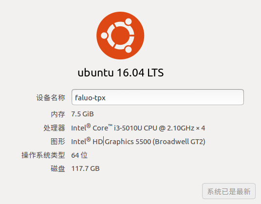
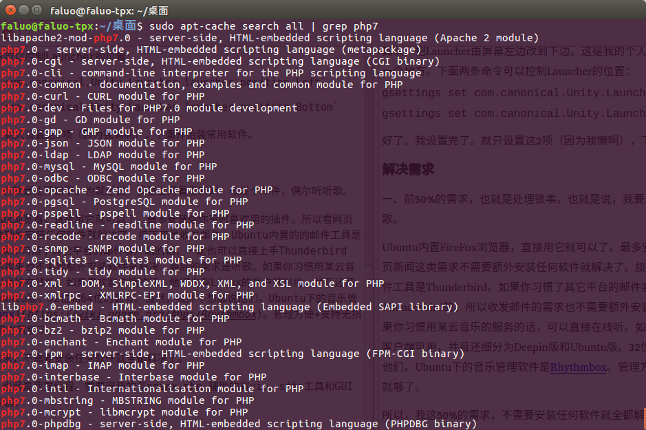
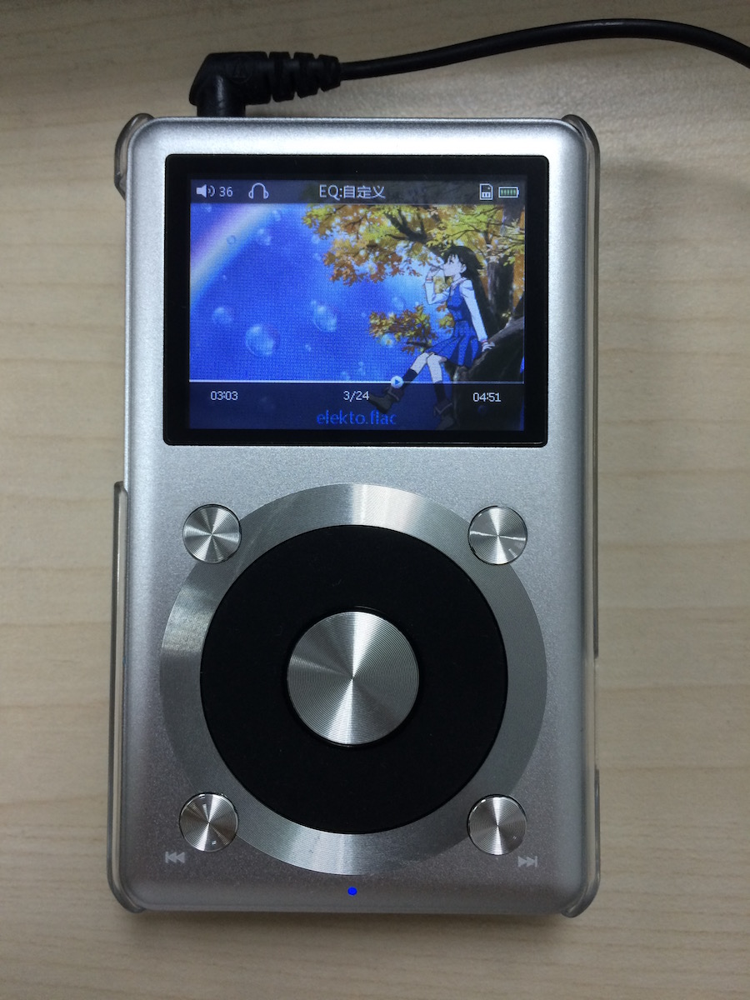
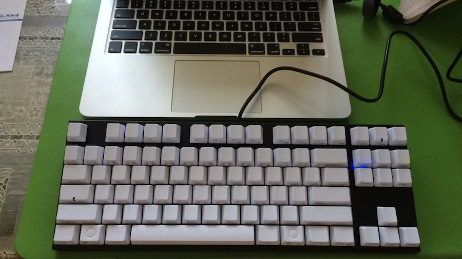

我的机器配置并不高，是X250的低配版，自己换了条8G的内存。

因为懒，所以哪怕是用Linux，也不想折腾（不，不要跟我提什么不想折腾就去用windows）。我平时用电脑做的事也非常少，50%时间用来处理锁事（看新闻，收发邮件等等），另50%用来编程。我实在不想把工作中的事拖到生活中，所以工作时写的项目，java,svn,eclipse,maven,mysql,tomcat等等这些东西是绝对不许出现在自己的电脑中的。我这里所说的编程，只是写写php，js，css，用git来管理一下版本，用nginx跑自己的项目臭美一下而已。所以你看，我的需求非常少。用Ubuntu来满足我这点小需求，简直太轻松了。现在就来看看我装好系统后设置了什么，装了什么软件吧。
设置
首先，解决一下经常断WIFI的问题。在我的机器上，无论是15.10还是16.04,WIFI每过一段时间就会掉线。不知道在别的机器上是否也如此，于是我百度了一下，找到了下面的这个方案，解决了这个问题：1、直接打开终端，输入下面的命令：
sudo vim /etc/ppp/options/
2、把lcp-echo-failure和lcp-echo-interval的值都改成30。
其次，把Launcher由屏幕左边改到下边。这是我的个人习惯，不喜欢把Launcher长期固定在一个地方。下面两条命令可以控制Launcher的位置：
gsettings set com.canonical.Unity.Launcher launcher-position Left
gsettings set com.canonical.Unity.Launcher launcher-position Bottom
最后，安装五笔输入法。不知道为啥我装好系统后发现只有全拼，没有五笔输入法。一下子觉得不会打字了。可以在终端中运行这条命令把它装回来：
sudo apt-get install fcitx-table-wubi
好了。我设置完了。就只设置这3项。其它如驱动啊电源管理啥的，一概不管，就用默认的（因为我懒啊）。下面开始装常用软件。
解决需求
一、前50%的需求，也就是处理锁事。主要是上网看看新闻，收发邮件，偶尔听听歌。
Ubuntu内置FireFox浏览器，直接用它就可以了。最多安装些你平时喜欢用的插件。所以看网页新闻这类需求不需要额外安装任何软件就解决了。接下来是收发邮件。Ubuntu内置的的邮件工具是Thunderbird。如果你习惯了其它平台的邮件客户端的话，一定也可以直接上手Thunderbird。所以收发邮件的需求也不需要额外安装软件来解决。最后的需求是听歌。如果你习惯用某云音乐的服务的话，可以直接在线听。如果喜欢客户端，他们也有Linux的客户端可用，并且还细分为Deepin版和Ubuntu版。32位和64位的都有。Ubuntu自带的音乐管理软件是Rhythmbox。管理方便+支持无损+开源+各种插件，用它就够了。
所以，我这50%的需求，不需要安装任何软件就全都解决了。
二、后50%的需求，即我对编程的需求。需要安装的软件有git,nginx,php,辅助的有vim，sftp工具和GUI下轻量级的代码编辑器。
先来解决nginx和php。很简单，apt-get就好了，想必大家都知道。vim也可以这么解决。并且现在可以通过apt-get来安装php7了。

然后，来解决sftp。也很简单，推荐FileZilla。除了Linux外，还有OSX和Windows版，挺有名的软件，用起来也很方便。可以在官网下载，也可以直接在Ubuntu的软件中心搜索安装。
最后，安装一个GUI下的编辑器。我用的是微软的vsCode。直接去官网下deb包安装就行了。我在Mac下用的也是它，所以Linux下仍然选它。
其实从我开始安装系统，到把这几个常用软件安装好，一共也就用了40分钟左右的时间。还是很简单的，没多做啥设置也没安太多东西。系统自带的软件本身品质就不错，可以满足绝大部分的日常需求，也不需要担心流氓软件。不知道你有没有从中体验到“开箱即用”的感觉呢？
对于后端开发来说，用JS主要做2件事，还都是很基础的事：
1、获取并验证；
2、提交到后台。
“验证”就不说了，每个项目对获取的数据的验证要求都不一样，“获取”和“提交”可以稍微谈谈。一般也就是用JS获取文本框，或者DIV，SPAN里的内容，再用AJAX提交一下。这些写法比较固定，简单。把下面的代码拷过去改个名字就能用了。
(下面代码用到了jQuery)
获取文本框内容
HTML：<input type="text" value="" id="input_test" onkeypress="getInputTest()"/>
function getInputTest(){
var tmp = $("#input_test").val();
alert(tmp);
}
遍历所有文本框
HTML：<div id="lots_of_text">
<input type="text" value="text_01" id="input_mult_1"/><br/>
<input type="text" value="text_02" id="input_mult_2"/><br/>
<input type="text" value="text_03" id="input_mult_3"/><br/>
<input type="text" value="text_04" id="input_mult_4"/><br/>
<input type="text" value="text_05" id="input_mult_5"/><br/>
</div>
<input type="button" value="CLICK" id="click_me"/>
$(function(){
$("#click_me").click(function(){
var length = $("#lots_of_text input:text").length;
for (var i = 0 ; i < length ; ++i){
alert($("#input_mult_" + (i + 1)).val());
}
});
})
获取DIV/SPAN
HTML:<div id="div_test" onclick="getDivTest()">这是一个DIV</div>
<span id="span_test" onclick="getSpanTest()">这是一个SPAN</span>
function getDivTest(){
var tmp = $("#div_test").text();
alert(tmp);
}
function getSpanTest(){
var tmp = $("#span_test");
alert(tmp.text());
tmp.text('被JS改了');
}
获取DIV数组
HTML:<div id="div_array_test" onclick="getDivArrayTest()">
<div id="div_sub_1">Array01</div>
<div id="div_sub_2">Array02</div>
<div id="div_sub_3">Array03</div>
<div id="div_sub_4">Array04</div>
<div id="div_sub_5">Array05</div>
</div>
function getDivArrayTest(i){
var divs = $("#div_array_test div");
divs.each(function(){
alert($(this).text());
});
alert(divs.length);
divs.eq(0).text('下标从0开始');
divs.eq(3).text('第4项值被改掉！');
}
生成一个表单
HTML:<input type="button" value="CLICK" id="form_click"/>
$(function(){
$("#form_click").click(function(){
var form = document.createElement("form");
document.body.appendChild(form);
var text = document.createElement("input");
text.type = "text";
text.name = "new_text";
text.value = "动态生成的。一般都生成hidden。";
form.appendChild(text);
var b_submit = document.createElement("input");
b_submit.type = "submit";
b_submit.name = "b_submit";
b_submit.value = "点我提交";
form.appendChild(b_submit);
form.name="new_form";
form.method="post";
form.action="#"
// form.submit();
});
})
生成点其它乱七八糟的东西
HTML：<input type="button" value="CLICK" id="create_others"/>
<div id="parent_div"></div>
$(function(){
$("#create_others").click(function(){
$("#parent_div").append('<div>Hello world~!</div>');
$("#parent_div").append('<span id="create_span" style="color:#FF0000;" onclick="alert(\'其实这个例子毫无意义:(\')">Hello span~!</span>');
});
})
烂大街的AJAX……
HTML:<input type="text" id="ajax_text_1" value="啧"/><br/>
<input type="text" id="ajax_text_2" value="ze"/><br/>
<input type="button" value="啧" onclick="ajaxCommit()"/>
function ajaxCommit(){
var t1 = $("#ajax_text_1").val();
var t2 = $("#ajax_text_2").val();
$.ajax({
url:"index.php",
type:"post",
dataType:"text",
data:{
"t1" : t1,
"t2" : t2
},
success:function(returnData){
alert(returnData);
}
});
}
$t1 = $_POST["t1"];
$t2 = $_POST["t2"];
echo $t1 . " " . $t2;
前两天入了个新玩具。本来对于音频设备不是太感冒，“音质”也属于比较主观的的概念，但在知道这部入门的国砖后，还是第一时间入了，没犹豫。能听一听无损我就很满足了。并不想太发烧。
 然而，我并没有好的耳机。现在在用的只有一条AKG的K420，还有一条铁三角的ATH-C770。都是入门中的入门货色。所以下一步打算入个差不多的，入门的耳机吧。只要比我现在用的好些就行。还是那句话，我不想在这上面花太多的钱，差不多就成了。
今天买了把新键盘。仍然是国产的87键，青轴。之所以买它是因为两点原因：1、样子还算很喜欢；2、蓝牙。机械键盘的选择有很多，但是加上“蓝牙”这个要求后，选择的余地就缩小了不少。今天到的这把还算满意吧，第一次连OSX系统时不知道为什么command键（也就是WIN键）失灵了，断开重连就好了。现在用了一晚上再也没出问题。附送的USB线是充电用的，听说充满后能使用600小时。也不知道得充多久能满。

(这是一篇以前博客上的笔记，现在转发到这里)
事务
只要写在begin和commit中就行了。在PHP中我是这么写的：$conn->query("BEGIN")；
$conn->query($sql); //这里执行多条语句
$conn->query("COMMIT");
Truncate
以下三条语句能达到Truncate的效果：delete from tableName;
delete from seq;
update sqlite_sequence set seq=0;
取得表信息
select * from sqlite_master;
取得字段信息
PRAGMA table_info(表名);
(这是一篇以前博客上的笔记，现在转发到这里)
这次学学事务与过期时间。
事务
Redis的“事务”和其它数据库一样，可以一次执行多条语句。执行过程中不会被打断。但需要注意的一点是，Redis的事务不能回滚。要使用事务的时，只要把语句写在multi和exec之间就行了。127.0.0.1:1010> multi
OK
127.0.0.1:1010> lpush tran1 100
QUEUED
127.0.0.1:1010> lpush tran2 200
QUEUED
127.0.0.1:1010> exec
1) (integer) 1
2) (integer) 1
Older >